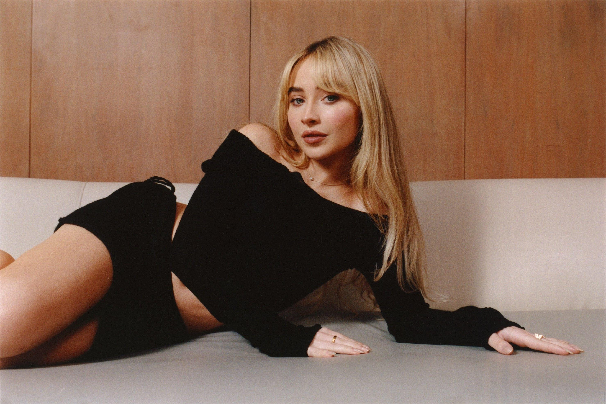
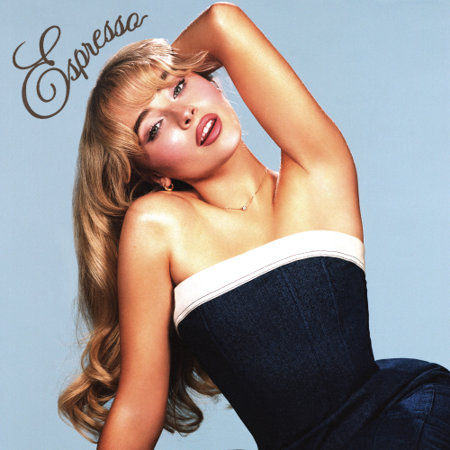

Uma estrela do pop atual
Sabrina Carpenter é uma cantora, atriz e compositora dos Estados Unidos. Ela começou sua carreira ainda jovem e ficou conhecida por seu talento na atuação e também por suas músicas no estilo pop.
Com o passar dos anos, Sabrina foi criando uma identidade própria. Suas músicas misturam romance, humor e frases marcantes, fazendo com que muitas pessoas se identifiquem com suas letras.
Seu estilo musical
A artista trabalha principalmente com o pop, mas também mistura elementos de outros estilos musicais. Suas canções costumam ter melodias leves, refrões chicletes e uma estética muito marcante.

Álbuns conhecidos
Entre seus álbuns mais famosos estão emails i can't send e Short n' Sweet. Esses projetos fizeram com que Sabrina conquistasse ainda mais reconhecimento no mundo da música.
Algumas músicas que ganharam muito destaque foram Espresso, Please Please Please, Nonsense e Feather. Elas mostram o lado divertido e confiante da cantora.
